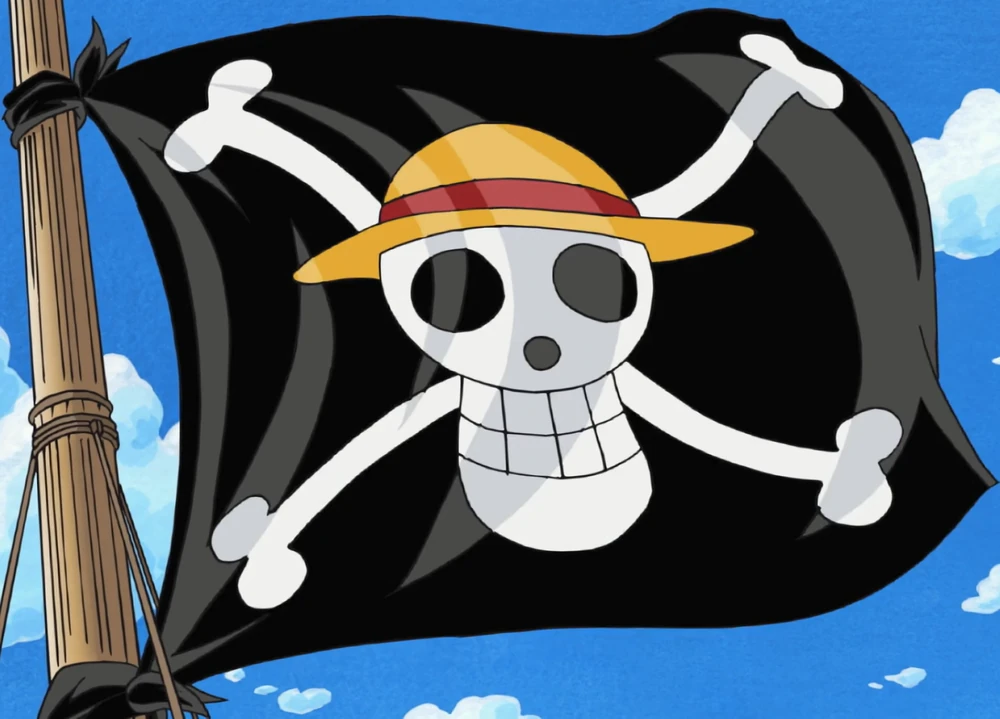

The Straw Hat Pirates are a crew of pirates led by Monkey D. Luffy. They sail the seas in search of the ultimate treasure, the One Piece.
The Straw Hat Pirates , also known as the Mugiwara Pirates, are an infamous and powerful pirate crew under the captaincy of Monkey D. Luffy that originated from the East Blue. First referred to with this moniker by Smoker in Arabasta, the crew made its way through the first half of the Grand Line within a year of Luffy beginning his pirating career, rapidly becoming more infamous and attracting powerful enemies and allies alike.

A Jolly Roger is a primary emblem of a pirate crew. Straw Hat's Jolly Roger is a simple skull and crossbones design, with the skull wearing Luffy's trademark straw hat.
